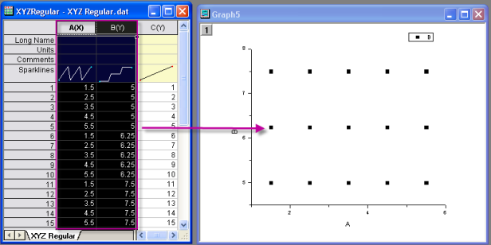

Gridding von äquidistant verteilten Daten
GridMethod-RegularSpace
Um die Arbeitsblattdaten mit der äquidistanten Gridding-Methode in Matrixdaten zu konvertieren, müssen die Arbeitsblattdaten die folgenden Bedingungen erfüllen:
- Jedem X-Wert muss dieselbe Anzahl an Y-Werten zugeordnet sein, und jedem Y-Wert muss dieselbe Anzahl an X-Werten zugeordnet sein.
- Der Abstand zwischen X- und Y-Datenwerten muss jeweils gleich groß sein.
Überprüfen der Äquidistanz der XY-Daten
Um die Äquidistanz zu überprüfen, werden die X- und Y-Datenspalten als Punktdiagramm gezeichnet und auf regelmäßige Abstände in den X- und Y-Dimensionen hin untersucht. Beachten Sie, dass im folgenden Beispiel die Daten in der X-Dimension sowie in der Y-Dimension äquidistant sind und dass die X- und Y-Schrittgrößen nicht gleich sein müssen.
- 
Konvertieren von äquidistanten Arbeitsblattdaten in Matrixdaten
Wenn Ihre Daten sich als äquidistant herausstellen:
- Markieren Sie die Z-Spalte des Arbeitsblatts und wählen Sie dann Worksheet: In Matrix konvertieren: XYZ Gridding. Damit wird der Dialog Arbeitsblatt in Matrix konvertieren geöffnet. (Origin hat Ihre Daten bereits geprüft und wählt automatisch Äquidistant, Dünn besetzt oder Renka-Cline, basierend auf dem Ergebnis.)
- Legen Sie Ihre Eingabedaten fest.
- Passen Sie ggf. den Toleranzfaktor an und entscheiden Sie, womit doppelte Punkte ersetzt werden sollen (mehrere Z-Werte für ein gegebenes XY-Paar sind nicht erlaubt).
- Setzen Sie Gridding-Methode und Parameter auf Äquidistant.
- Optional ist es auch möglich, den X- und Y-Bereich einzuschränken und die Vorschau des Diagrammtyps zu wählen.
- Durch Klicken auf OK wird eine Origin-Matrix erstellt, die die durch das Gridding erhaltenen Z-Werte enthält.